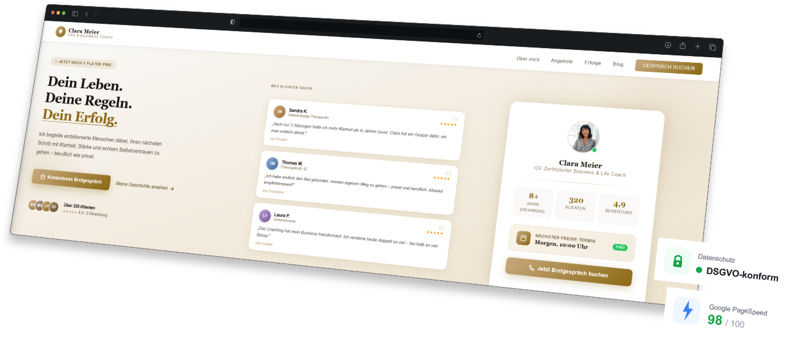

Wer einen Coach oder Berater sucht, entscheidet online. Mit einer starken Website überzeugst Du vom ersten Klick an – bevor das erste Gespräch stattfindet.

Das sind die häufigsten Probleme von Coaches & Beratern ohne professionelle Online-Präsenz
Ohne optimierte Website tauchst Du in den Suchergebnissen kaum auf – und Deine Konkurrenz gewinnt die Anfragen, die eigentlich zu Dir gepasst hätten.
Im Coaching entscheidet Vertrauen alles. Eine unprofessionelle oder fehlende Website kostet genau das – noch bevor jemand Dich kontaktiert hat.
Interessenten wissen nicht genau, was Du anbietest, für wen Du arbeitest und was Du kostest. Unklarheit kostet Anfragen.
Statt Energie in Dein eigentliches Coaching zu stecken, verlierst Du Zeit mit manueller Akquise. Eine gute Website arbeitet für Dich – rund um die Uhr.
Ich baue Websites, die auf die Bedürfnisse von Coaches & Beratern zugeschnitten sind – nicht von der Stange.
Deine Über-mich-Seite ist der wichtigste Teil Deiner Website. Ich helfe Dir, Deine Geschichte, Werte und Qualifikationen so zu präsentieren, dass Klienten sofort wissen: Das ist die richtige Person für mich.
Ein eingebundener Online-Kalender mit Deinen verfügbaren Zeitslots oder ein schlankes Buchungsformular ermöglicht es Interessenten, selbst einen Termin zu wählen – ohne langes hin- und her-schreiben.
Echte Erfahrungsberichte Deiner Klienten sind das stärkste Vertrauenssignal im Coaching. Ich platziere sie wirkungsvoll – damit neue Interessenten sofort sehen, welche Ergebnisse Du lieferst.
Was bietest Du an? Für wen? Zu welchem Preis? Klare Angebotsseiten helfen Interessenten, schnell zu entscheiden – und vermeiden unpassende Anfragen.
Ich optimiere Deine Website gezielt für Suchanfragen wie "Business Coach München" oder "Life Coach online" – damit die richtigen Menschen Dich finden, wenn sie nach einem Coach suchen.
Deine Klienten besuchen Deine Website vom Handy, Tablet oder Desktop. Ich stelle sicher, dass Deine Seite auf allen Geräten professionell aussieht, schnell lädt und klar zur nächsten Handlung führt.
Egal ob Einzel-Coach oder etabliertes Beratungsunternehmen – ich baue Websites für alle Bereiche.
Ich lerne Dich und Dein Coaching-Angebot kennen: Wen willst Du ansprechen, was ist Deine Kernbotschaft, welche Ziele hast Du? Das dauert ca. 15 Minuten – kostenlos und unverbindlich.
Du bekommst ein konkretes Konzept und ein faires Angebot. Keine versteckten Kosten, kein Fachjargon – klare Ansagen, wie ich Dich online überzeugend positioniere.
Ich baue Deine Website, Du schaust Dir Zwischenstände an und gibst Feedback. Einfache Seiten sind oft schon in 1–2 Wochen fertig.
Deine Website geht online. Ich bleibe erreichbar – für Anpassungen, Updates und Fragen. Du wirst nicht allein gelassen.
Kostenlos & unverbindlich
Ich erstelle Dir eine kostenlose Demo-Website – individuell für Dein Coaching-Angebot. Kein Risiko, keine Verpflichtung.
Demo jetzt anfordern →Eine gute Website ist nicht nur Visitenkarte – sie ist Dein bester Klientengewinner
Eine gut strukturierte Website filtert passende Klienten vor – Du bekommst weniger unpassende Anfragen und mehr Menschen, die wirklich bereit sind, mit Dir zu arbeiten.
Wer Deine Website besucht, lernt Dich kennen – noch bevor ihr gesprochen habt. Das macht Erstgespräche wärmer und schneller erfolgreich.
Statt aktiv nach Klienten zu suchen, findest Du sie über Deine Website. Das gibt Dir mehr Zeit für das, was Du wirklich liebst: das Coaching.
Viele Coaches sind online schlecht sichtbar oder haben keinen klaren Auftritt. Jetzt ist der richtige Moment, sich als Experte zu positionieren – bevor die Konkurrenz aufholt.
Alles, was Du vor dem Start wissen möchtest
Lass uns in einem kurzen, kostenlosen Gespräch herausfinden, wie ich Dich als Coach oder Berater digital überzeugend positioniere. Unverbindlich, unkompliziert und auf Augenhöhe.
Jetzt Gespräch vereinbaren